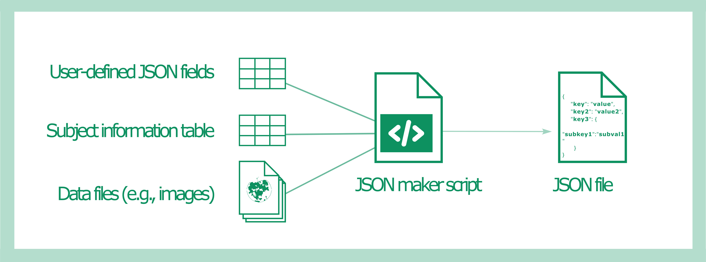

In this use case we read the JSON fields from a table and create JSON files with generic and file-specific information
Code
R
Intermediate
Author
Affiliation
G.Fraga Gonzalez
Center for Reproducible Science, UZH
Published
July 1, 2024
Create a JSON file with metadata from tables and data files
In this example we create simple human and machine-readable metadata files in JavaScript Object Notation (JSON). They consists of fields of key-value pairs. These are sidecar metadata files, that is, they accompany a separate source data file (for this example we use dummy images as data files). In this use case, researchers can edit a table specifying the fields in the JSON file. This script creates a JSON with these fields. Some of the values in the JSON fields are filled for each of the data files based on the filename and an additional table with metadata (subject information).
Important
There are good editors with a graphical interface available online to read and write JSON. We recommend the following website: https://jsoneditoronline.org/
In general, we recommend creating JSON files with a script and not manually, to prevent data entry errors. JSON metadata files are part of essential machine-readable metadata, and additional to structured metadata (tables) which may contain human-only readable columns (e.g., ‘comment’ variables wtih free text notes). JSON files can have more details than the metadata tables.

This use case is based on:
inputs
A csv table specifying the JSON keys (e.g., “SynchrotronName”,“SpeciesName” ) and their values (e.g., “mouse”) when they apply to all files. If a value is blank it will be filled by information in the filename or table with subject information (see below)
A collection of data files encoding subject ID in their name.
An Excel table with subjects information (e.g.,sex, body weight) that has to be added to the JSON file
We will use the R package jsonlite to write the JSON string
outputs
A JSON file per data file with the fields from the table is created for each file with the same filename and the subject ID added in the corresponding json field. In this case the data files are images from mice.
Note on this example
This demo uses a dummy data set, i.e., the JSON fields and metadata have no real-life meaning.Metadata tables can be prepared in a spreadsheet and saved in different file formats for example csv and Excel. In actual projects the csv file format is preferred over Excel, for the sake of interoperability.
Read table with JSON fields and table with subjects information
Code
library(knitr)library(dplyr)library(kableExtra)# Enter input directories dirinput<-'dummy_data'diroutput<-'../../_data/'# Read table with JSON fields jsonFields<-read.csv(file.path(dirinput,'Dummy_JSON_fields.csv'))# Read table with subject informationsubj_info<-openxlsx::read.xlsx(file.path(dirinput,'DummyData1_20241234_subjects.xlsx'), sheet ='subject_info')
Read data filenames and separate subject ID
Here we read some .jpg pictures with dummy images. The first filename part contains the subject ID.
Code
# Create table filenames files<-dir(file.path(dirinput,'Images'))# Find all files in our images folder# Use pattern to take only subject imagesfname<-files[grepl(paste0('^DS.*.jpg$'),files)]tbl_files<-as.data.frame(fname)# First filename part contains subject ID. Create new column with that info. tbl_files$subject<-sapply(strsplit(fname,'_'),'[[',1)
In this table we created the column Data.name that indicates the key and the column Permissible.values which will indicate the value in the JSON file. The other columns are not necessary for this example, but can help the users when specifying the content of their JSON files. The entries in Permissible.values will be filled with file-specific information.
Important
The names of these columns are arbitrary and you can define any other name. It is important to note the format of the values (e.g., numeric, alphanumeric or strings). The values can also be arrays [1,2,3]. A JSON file can have a more hierarchical structure with keys and subkeys. In this example we use a simple structure.
Prepare the human-readable table specifying the JSON fields into a suitable format to read with jsonlite::toJSON()
Code
# Preserve the sorting of the field names as in the tablesorted_fieldnames<-factor(jsonFields$Data.name, levels =jsonFields$Data.name)# Transform table into a list. Each element is a fieldname with its valuesjson_data<-lapply(split(jsonFields$Permissible.values,sorted_fieldnames),as.character)
Add file-specific information
Loop through the image files and fill the file-specific values in the JSON file with information from the table with subject info.
Code
library(jsonlite)# Join tables with filenames and subject information by subjIDmetadat<-dplyr::full_join(x=tbl_files, y=subj_info, by=join_by('subject'=='subjID'),keep=FALSE)# write JSON files saveoutput<-0for(iin1:nrow(tbl_files)){# Complete Fields with info From table json_data$IntendedFor=metadat$fname[i]json_data$SubjectID=metadat$subject[i]json_data$Sex=metadat$Sex[i]json_data$BodyWeight_gr=metadat$`Body.weight.(g)`[i]# Convert the list to a JSON stringjson_string<-toJSON(json_data, pretty =TRUE, auto_unbox =TRUE)# Save the JSON string to a fileif(saveoutput==1){ouputfilename<-gsub('.jpg','.json',tbl_files$fname[i])# rename input filewrite(json_string, file.path(diroutput, ouputfilename))print(paste0("Wrote ", file.path(diroutput, ouputfilename)))}# clean json rm(json_string)}
Output Examples
The r package jsonlite offers several formatting options. Depending on your needs you may have some preferences.
library(knitr)library(dplyr)library(kableExtra)# Enter input directories dirinput<-'dummy_data'diroutput<-'../../_data/'# Read table with JSON fields jsonFields<-read.csv(file.path(dirinput,'Dummy_JSON_fields.csv'))# Read table with subject informationsubj_info<-openxlsx::read.xlsx(file.path(dirinput,'DummyData1_20241234_subjects.xlsx'), sheet ='subject_info')# Create table filenames files<-dir(file.path(dirinput,'Images'))# Find all files in our images folder# Use pattern to take only subject imagesfname<-files[grepl(paste0('^DS.*.jpg$'),files)]tbl_files<-as.data.frame(fname)# First filename part contains subject ID. Create new column with that info. tbl_files$subject<-sapply(strsplit(fname,'_'),'[[',1)# Preserve the sorting of the field names as in the tablesorted_fieldnames<-factor(jsonFields$Data.name, levels =jsonFields$Data.name)# Transform table into a list. Each element is a fieldname with its valuesjson_data<-lapply(split(jsonFields$Permissible.values,sorted_fieldnames),as.character)library(jsonlite)# Join tables with filenames and subject information by subjIDmetadat<-dplyr::full_join(x=tbl_files, y=subj_info, by=join_by('subject'=='subjID'),keep=FALSE)# write JSON files saveoutput<-0for(iin1:nrow(tbl_files)){# Complete Fields with info From table json_data$IntendedFor=metadat$fname[i]json_data$SubjectID=metadat$subject[i]json_data$Sex=metadat$Sex[i]json_data$BodyWeight_gr=metadat$`Body.weight.(g)`[i]# Convert the list to a JSON stringjson_string<-toJSON(json_data, pretty =TRUE, auto_unbox =TRUE)# Save the JSON string to a fileif(saveoutput==1){ouputfilename<-gsub('.jpg','.json',tbl_files$fname[i])# rename input filewrite(json_string, file.path(diroutput, ouputfilename))print(paste0("Wrote ", file.path(diroutput, ouputfilename)))}# clean json rm(json_string)}
![]()